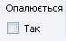

ТКЕнерго менеджер
Домашня <-> ТКЕ абонент <-> ТКЕ організації <-> ТКЕ асистент <-> Контакти
|
ТКЕнерго менеджер |
Домашня <-> ТКЕ абонент <-> ТКЕ організації <-> ТКЕ асистент <-> Контакти |
|
Рахунок абонента
У даній програмі термін “рахунок абонента” охоплює усі дані про абонента підприємства: його особовий рахунок, прізвище ,ім'я ,по батькові, адреса проживання, дані про пільги і субсидії, а також нарахування і проплату.
Попередній малюнок – це вигляд головного вікна програми без додаткових таблиць і в мінімально можливому розмірі. На ньому під панеллю швидких кнопок знаходяться елементи управління, які відносяться до Рахунку абонента. Цифрами позначено основні групи кнопок і стрічок:
При необхідності знайти абонента у великій базі даних знаючи його прізвище (а можливо й ім'я та по батькові, оскільки є однофамільці) потрібно в стрічці по ПІБ почати вносити перші букви прізвища абонента, якого ми шукаємо. При співпадінні перших введених літер з прізвищем абонента, який є в базі даних стрічка автоматично запропонує цого абонента.
Цей малюнок демонструє випадок, коли були внесені чотири букви “Бага”, арешту букв копм'ютер пропонує сам. Якщо це ініціали саме цієї особи, яку ми шукали – сміло тиснемо ENTER, якщо ні, то пробуємо вносити наступні літери прізвища (імені). Також для пошуку можна скористатися розгортанням усього списку, клікнувши по чорному трикутничку, який знаходиться зправа від необхідної стрічки. При цьому рухуючи повзунком можна пересуватися донизу або доверху.
Все ж, набагато швидше і ефективніше при пошуку працювати з особовим рахунком абонента. У цьому випадку не вносячи жодних символів до стрічки “По ПІБ”, у стрічці “По рахунку” вносимо номер абонента і тиснемо Enter. Якщо абонент з особовим рахунком існує, то програма відкриє інформацію про нього і автоматично очистить стрічку “По рахунку”. Якщо ж абонента з внесеним номером в базі даних не існує, то програма не змінить активного абонента, а внесений неіснуючий абонентський рахунок залишиться в стрічці. УВАГА. Не зникне з стрічки пошуку “По рахунку” також особовий рахунок абонента, який уже був активним у той момент, коли вносився його ж особовий рахунок для нового пошуку.
Під цією літерою знаходиться блок стрічок і кнопок, у яких власне і міститься особиста, не залежна від часу інформація про абонента. Відразу з цього вікна ми можемо редагувати практично усю інформацію про абонента (за винятком особового рахунку) і враховуючи ваші реєстраційні дані (рівень доступу). Тут усі стрічки можна редагувати повністю, а лише 3 стрічки (стрічки з випадаєчим списком) взагалі не редагуються – їх значення обираються з випадаючого списку наперед заданих значень. Це стрічка будинку (оскільки абонент проживає в окремому конкретно визначеному будинку, в даному випадку можна сказати що абонент присвоюється даному будинку), а також стрічки першої і другої пільги (є сталий перелік пільг).Значення цифрових стрічок, які містять цифрові значення можна змінювати як прямим введенням з клавіатури, так і стрілками вверх-вних з правої сторони стрічки. Є також випадок проставлення галочки опалення активного абонента. Якщо галочка є – то абонент опалюється, якщо немає – ні.
<--> 
При переключенні стану опалення з'являться вікно, яке перепитує, чи користувач дійсно хоче змінити стан опалення.

Після цього вікна стан опалення поточного абонента змінюється лише при натисненні клавіші “Так”.
При зміні вмісту будь-якої стрічки або елемента управління, які відносяться до цієї частини програми чотири чорні горизонтальні полоски, що проходять по всій ширині абонентського вікна змінюють колір на червоний. При цьому робиться активною кнопка “Зберегти”. При її натисканні, усі зміни заносяться до бази даних, а для підтвердження запису потім автоматично перечитуються новозаписані дані з бази даних. Таким чином після збереження, якщо ми бачимо у вікні коректну інформацію – операція запису пройшла успішно. Після збереження змін червоні полоски знову стають чорними. Якщо ви помилилися і не бажаєте зберігати внесені зміни, натисніть кнопку “Початк.”, чо призведе до почорніння чотирьох полосок і повернення попередніх сначень полів Рахунка абонента. УВАВГА. При внесенні змін в Рахунок абонента і переході до наступного активного абонента без збереження і повернення даних, усі зміни автоматично заносяться до бази даних.
Ця цифра позначає одну стрічку зміни року висвітлення операцій активного абонента у наступній частині вікна під номером 4.
Цифра 4 вказує на таблицю, у якій помісячно відображено усі операції поточного абонента. Кожна горизонтальна стрічка відображає операції у відповідному місяці.
Остання горизонтальна стрічка талиці є сумою усіх інших відповідних вертикальних стрічок (операцій певного виду за рік). Значення останньої горизонтальної стрічки розраховується за формулою:
Вхідне сальдо + Нарахування – Нарах. Субсидії – Донарах. Субс – Оплачено
У цій таблиці “Субс.” - нарахування субсидії, “Д.Субс” - донарахування субсидії, “Кор.пл.” - коректура по площі, “Кор.сум.” - коректура по сумі.
П'ятіркою позначена площа, до якої входять п'ять кнопок, одна стрічка порядковості абонента і нередагована стрічка з загальною кількістю абонентів у базі даних.

При завантаженні програми Рахунок абонента неможливо редагувати, оскільки завантажено найнижчий рівень доступу користувача, коли нічого не можна змінити в базі даних. Щоб змінювати інформацію про абонента необхідно зареєструватися користувачем з відповідним рівнем доступу.
|
© 2007 Компанія “АбонПро” |
|
ТКЕнерго менеджер 1.0.1 |